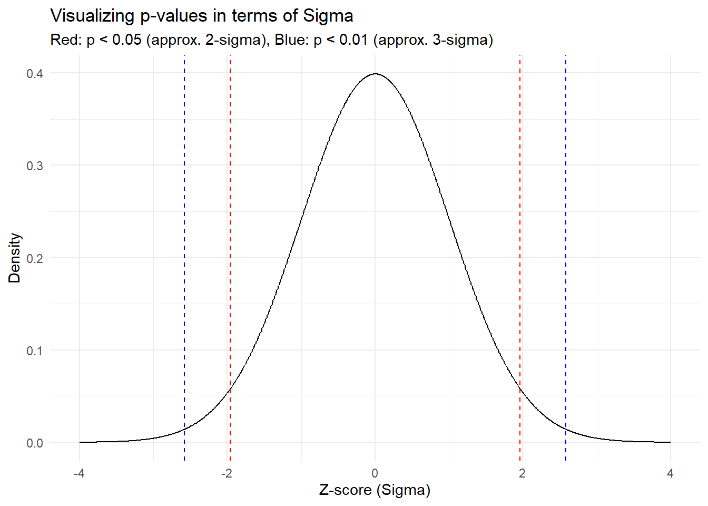
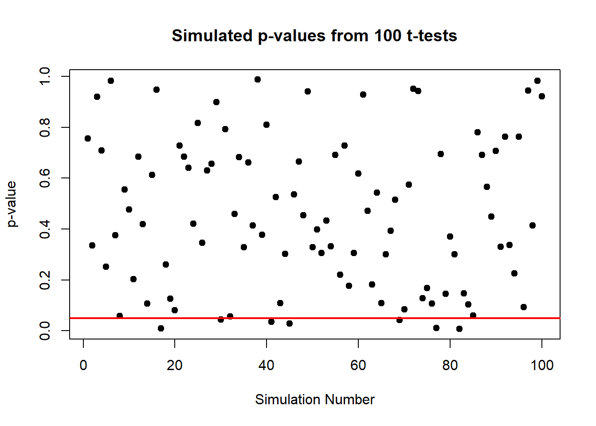

Chapter 3 Understanding the p-value
Let’s start with a simple question: What is the probability that what we observe in a test is due to random chance? This is an important question, right? It’s the foundational idea behind the p-value.
3.1 What is a p-value?
The p-value helps us answer this question. It measures the probability of observing results at least as extreme as the ones in your study, assuming that the null hypothesis (no effect, no difference, etc.) is true. In simpler terms, a low p-value indicates that the observed data is unusual under the assumption of the null hypothesis.
3.2 Visualizing p-values: How Sigma Frames Our Understanding
Ever wondered how statisticians turn abstract p-values into something you can actually picture? Let’s dive into an engaging visualization that makes this concept as clear as a sunny day.
3.2.1 The Concept of Sigma
In statistics, when we talk about sigma (σ), we’re really diving into the world of standard deviations—a measure of how spread out numbers are in your data. It’s like measuring how far people in a park are spread out from the ice cream truck!
3.2.2 The Plot of Sigma and p-values
Let’s paint this picture. We’re going to plot a standard normal distribution (you know, that classic bell-shaped curve) and shade the areas that correspond to significant p-values.
library(ggplot2)
library(dplyr)
# Create a sequence of z-scores and their density values
z_scores <- seq(-4, 4, by = 0.01)
density_values <- dnorm(z_scores) # Normal density
# Data frame for ggplot
data_for_plot <- data.frame(z_scores, density_values) %>%
mutate(
fill_color = case_when(
z_scores < -1.96 | z_scores > 1.96 & z_scores < -2.58 | z_scores > 2.58 ~ "blue",
z_scores < -1.96 | z_scores > 1.96 ~ "red",
TRUE ~ NA_character_
)
)
# Create the plot
p_value_plot <- ggplot(data_for_plot, aes(x = z_scores, y = density_values)) +
geom_line() +
# geom_area(aes(fill = fill_color), alpha = 0.2) +
scale_fill_manual(values = c("red" = "red", "blue" = "blue")) +
geom_vline(xintercept = c(-1.96, 1.96), linetype = "dashed", color = "red") +
geom_vline(xintercept = c(-2.58, 2.58), linetype = "dashed", color = "blue") +
labs(
title = "Visualizing p-values in terms of Sigma",
subtitle = "Red: p < 0.05 (approx. 2-sigma), Blue: p < 0.01 (approx. 3-sigma)",
x = "Z-score (Sigma)",
y = "Density"
) +
theme_minimal()
p_value_plot
3.2.3 What’s Going on Here?
- Red Zones: These areas show where our results would fall if they were more than 1.96 standard deviations away from the mean (either side). Statistically, this represents a p-value less than 0.05, where we start to raise our eyebrows and think, “Hmm, maybe there’s something interesting going on here.”
- Blue Zones: Even more extreme, these parts of the curve represent results more than 2.58 standard deviations from the mean. Here, with a p-value less than 0.01, our eyebrows aren’t just raised, they’re practically in our hairline, signaling even stronger evidence against the Null Hypothesis.
3.2.4 Takeaway
By mapping p-values to this visual sigma scale, we can literally see the “distance” a result needs to achieve to be considered significant. It’s a fun and illuminative way to grasp what can often be an elusive concept. Keep this visual in mind next time you come across p-values in your research or studies!
3.3 Exploring p-values through Simulation
It is a lot easier to grasp the concept of p-values when you see them, so let’s do that! We’re going to simulate data 100 times from the normal distribution with mean 0 and perform a t-test each time. This exercise will help illustrate the variability of p-values and how often we might encounter false positives even when there is no real effect.
3.3.1 Simulating Multiple t-tests
# Set the seed for reproducibility
set.seed(42)
# Simulate 100 t-tests under the null hypothesis
p_values <- replicate(100, {
data <- rnorm(100, mean=0, sd=1) # 100 random normals, mean = 0, sd = 1
t.test(data)$p.value # Perform a t-test and extract the p-value
})
# Plot the p-values
plot(p_values, type = "p", pch = 19, main = "Simulated p-values from 100 t-tests",
xlab = "Simulation Number", ylab = "p-value")
abline(h = 0.05, col = "red", lwd = 2) # Line at p-value = 0.05
3.3.2 What’s Happening Here?
In this plot, each point represents the p-value from a single t-test under the null hypothesis (where the true mean is zero). The red line at 0.05 marks the conventional threshold for statistical significance.
3.3.3 Insights from the Simulation
From the plot, observe how the p-values are scattered across the range from 0 to 1. Some p-values fall below 0.05, suggesting significant results. Here’s the catch: since there’s truly no effect (we know because we set the mean to zero), these “significant” results are actually false positives.
This visualization vividly demonstrates a critical point: statistical significance (p < 0.05) does not always imply practical significance. It shows that even when there is no true effect, we can still expect to see about 5% of the p-values falling below 0.05 purely by chance. This is a crucial lesson in the interpretation of p-values and the importance of considering other factors, like the power of the test and the context of the data, before drawing conclusions.
3.4 False Positives and False Negatives
Now, let’s discuss a bit about false positives and false negatives:
- False Positive (Type I Error): This occurs when we incorrectly reject the null hypothesis when it is actually true. For example, our experiment might suggest that a drug is effective when it isn’t.
- False Negative (Type II Error): This happens when we fail to reject the null hypothesis when it is actually false. In this case, we might miss out on recognizing an effective treatment.
3.4.0.1 The Balancing Act of False Positives
Why do we accept a risk of false positives (Type I errors) at all? Why not just set a p-value threshold so low that false positives are virtually nonexistent? While intuitively appealing, setting an extremely low p-value threshold (like 0.001 or lower) would make it very difficult to find a statistically significant result even when a true effect exists. This conservative approach would increase the risk of Type II errors (false negatives), where we fail to detect true effects. The conventional p-value threshold of 0.05 is a compromise that reflects a practical balance between these types of errors, aiming to protect against too many false discoveries while still allowing us to detect true effects reasonably often.
3.5 Understanding Power Through Elephants
Let’s use a fun example to understand statistical power. Imagine we’re trying to detect an elephant in this room. How many of you would it take to notice it? Probably just one, right? Because an elephant is huge and obvious. This scenario describes a test with high power, even with minimal data, you can correctly detect an effect.
Now, what if we’re trying to detect a mouse instead? It’s much smaller, more elusive. You’d probably need more people to confirm it’s really there. This is like a statistical test where detecting a small effect size requires a larger sample to maintain high power.
3.5.0.1 The Concept of Power and Cohen’s d
Statistical power is the probability that a test correctly rejects the null hypothesis when it is false. It depends on several factors, including the effect size, sample size, significance level, and the variability of the data. An often-used measure of effect size in comparing two means is Cohen’s d. Cohen defined d = 0.2 as a ‘small’ effect size, d = 0.5 as ‘medium’, and d = 0.8 as ‘large’. These benchmarks help researchers understand the strength of an effect independent of sample size and can guide the design of experiments.
Cohen’s d of 0.8 is often used as a benchmark for a “large” effect size, reflecting a robust and noticeable difference between groups. In many fields, this level of effect is considered practically significant, and achieving this power of 0.8 (80% chance of detecting the effect if it exists) is desirable because it balances the likelihood of detecting true effects with the cost of the study.
# Calculating power in R
library(pwr)
# Example with Cohen's d = 0.8 for a large effect size
pwr.t.test(n = 30, d = 0.8, sig.level = 0.05, type = "two.sample", alternative = "two.sided")##
## Two-sample t test power calculation
##
## n = 30
## d = 0.8
## sig.level = 0.05
## power = 0.8614225
## alternative = two.sided
##
## NOTE: n is number in *each* groupIn this R code, we’re calculating the power of a t-test designed to detect a large effect size (Cohen’s d = 0.8) with 30 observations per group. This helps illustrate why understanding these concepts is crucial for designing effective studies.
By grasping these insights, you can better design your studies and interpret their results. Isn’t that cool?
3.6 Beyond p-values: The Importance of Substantive Significance
While diving into hypothesis testing and p-values, it’s crucial to remember that statistical significance doesn’t always equate to substantive, or practical, significance. This distinction can help us make more meaningful interpretations of our results.
3.6.1 Example: Water vs. Cyanide
Consider an experiment determining the lethality of drinking water compared to cyanide. If one consumes enough water, they can get water poisoning. Thus, statistically we might find significant effects for both substances on health outcomes, but the substantive significance differs dramatically. The amount of cyanide required to be lethal is minuscule compared to water. Here, the p-value tells us there’s an effect, but it doesn’t tell us about the magnitude or practical implications of these effects.
In practical terms, always ask, “How big is the effect? Is it large enough to be of concern or interest?” This approach ensures that we’re not just chasing statistically significant results but are also making decisions based on their real-world impacts.